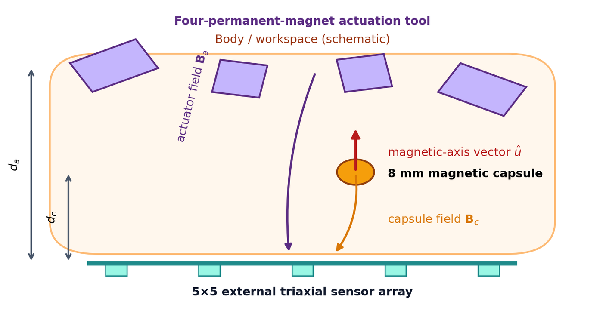
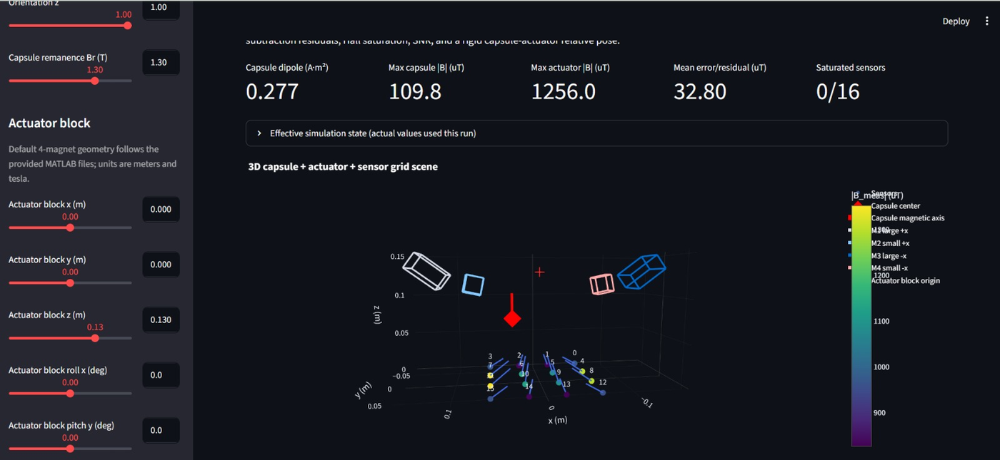
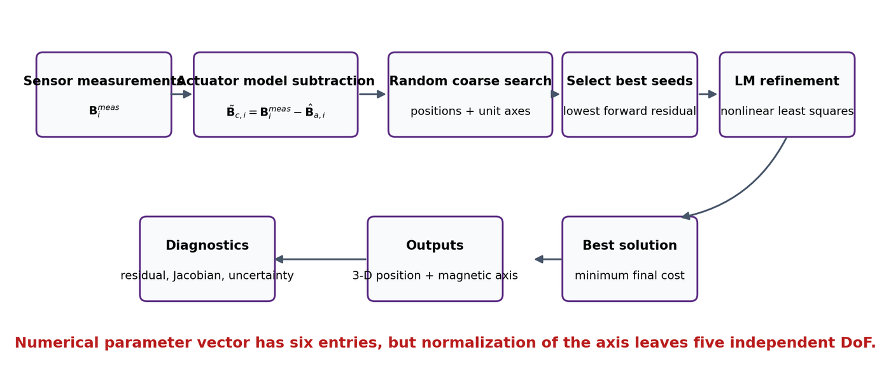
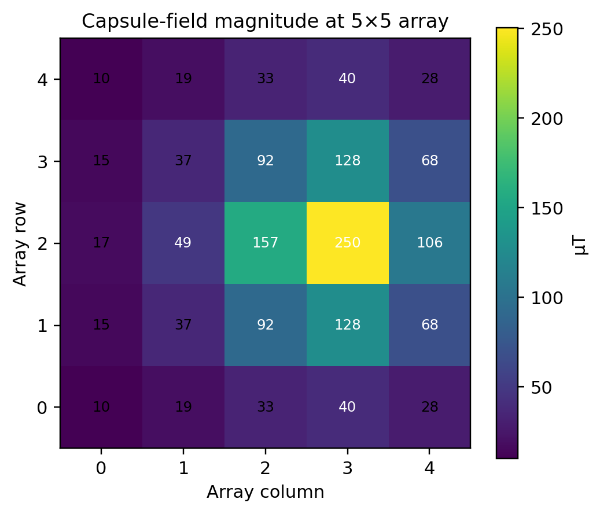
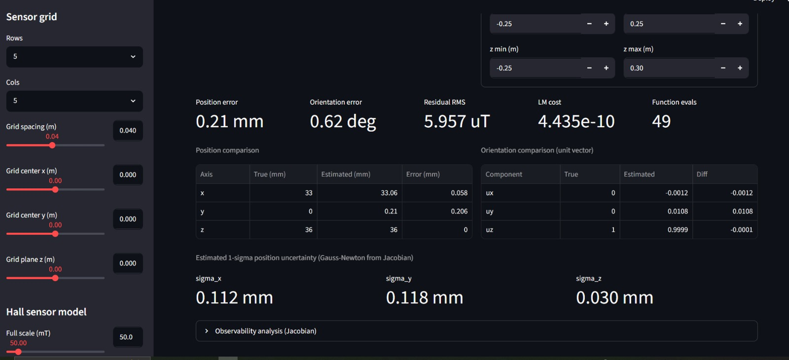
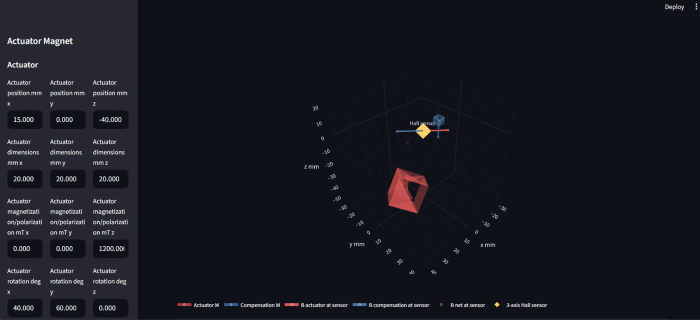
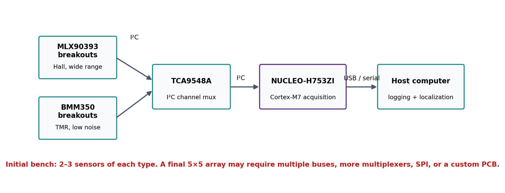

Real-Time Magnetic Localization of a Capsule Robot for Minimally Invasive Surgery
Research Internship Institut FEMTO-ST · AS2M ColoscoBot project 2026
ColoscoBot is a magnetically actuated capsule robot for minimally invasive colonoscopy, developed by FEMTO-ST with the Carnot Institute of Burgundy. An external tool of four permanent magnets steers an 8 mm magnetic capsule through the colon. Closing the control loop requires the capsule's position and orientation in real time. However, every magnetic sensor sees the capsule's weak field on top of the actuator's field, which is up to more than a hundred times stronger. (See the internship →)

The challenge: a localization system must (1) keep enough dynamic range not to saturate under the actuator field, (2) still resolve the weak capsule signature after the actuator field is subtracted, and (3) do it with low enough latency for closed-loop control.
1) Technology Assessment
I first assessed non-magnetic options as the primary pose sensor. An IMU drifts, electromagnetic trackers are swamped by the permanent-magnet background, ultrasound struggles with gas in the colon, UWB/RF is too coarse, and visual SLAM fails on deformable, low-texture tissue. The conclusion: magnetic sensing as the primary metric source, with an IMU as the best candidate for completing orientation.
Across magnetic sensor technologies (Hall, AMR, GMR, TMR, fluxgate, inductive and resonant markers), the key trade-off is dynamic range vs. noise. Two sensors were selected for comparison: the wide-range MLX90393 Hall sensor (about ±50 mT, widely used in capsule research) and the low-noise BMM350 TMR sensor (about ±2 mT).
2) Physics-Based Simulator
I built a modular Python forward and inverse simulator with an interactive Streamlit interface. It covers the capsule, the four-magnet actuator, configurable planar sensor arrays and realistic sensor errors. For every sensor it reports the capsule and actuator fields, SNR, actuator-to-capsule ratio, saturation and the residual after subtraction, all exportable to CSV.

Magnetic models
- Capsule: an 8 mm sphere with Br = 1.3 T, modelled as a magnetic dipole with moment m ≈ 0.277 A·m².
- Actuator: four magnets (two 40×40×20 mm and two 20×20×20 mm, 1.36 T) modelled with closed-form finite-cuboid fields, because they are too large and too close for a dipole approximation.

Realistic sensor model

3) Inverse Localization

- Multi-start Levenberg–Marquardt nonlinear least squares over position and magnetic-axis direction, seeded from a coarse random search to avoid local minima.
- Jacobian-based uncertainty (Gauss–Newton covariance) and a condition-number check of observability.
- Force and torque diagnostics on the capsule from the actuator field gradient.
- 5 independent DoF: 3D position plus the 2-DoF magnetic-axis direction. A single dipole's field doesn't change when it rotates about its own axis, so full 6-DoF pose needs a symmetry-breaking source such as an onboard IMU.
- Key insight: software subtraction can't recover analogue saturation, and a 1% gain error on a 5 mT actuator field leaves a 50 µT residual, which can be larger than the capsule signal itself.
4) Simulation Results


Hall vs. TMR: the dynamic-range / sensitivity frontier
| Capsule / actuator distance | MLX90393 position · axis error | BMM350 position · axis error |
|---|---|---|
| 36 / 91 mm | 0.19 mm · 0.58° | saturated |
| 40 / 95 mm | 0.27 mm · 0.63° | saturated |
| 50 / 105 mm | 0.62 mm · 0.91° | 0.04 mm · 0.06° |
| 60 / 115 mm | 1.35 mm · 1.69° | 0.08 mm · 0.12° |
| 70 / 125 mm | 2.55 mm · 3.02° | 0.16 mm · 0.22° |
| 80 / 135 mm | 4.60 mm · 5.48° | 0.29 mm · 0.35° |
The Hall sensor never saturates but loses accuracy with distance, because its minimum capsule SNR is only about 6–8 dB. The TMR sensor is unusable close to the actuator but, beyond its saturation boundary, keeps a capsule SNR of about 34–36 dB and gives sub-0.3 mm errors. The best design is therefore a combination of array placement, sensor range and calibration, not simply the lowest-noise sensor.


Benchmark against published experiments

5) Passive Field Compensation Study
Since software subtraction can't undo saturation, I built a second simulator (Streamlit + Magpylib) to test whether an extra permanent magnet could physically cancel the actuator field at a sensor before it reaches the sensor's analogue front end. The compensation magnet's placement is optimised with differential evolution, refined with Nelder–Mead or Powell, and checked against placement tolerances.
Finding: cancellation works well at a single sensor and could allow lower-range, lower-noise sensors to be used. But it is fundamentally local. One magnet can't cancel a spatially varying field over a whole array, so scaling up becomes a constrained multi-magnet optimisation.


6) Experimental Platform

The experimental plan follows five stages: characterise each sensor (offset, noise, update rate, cross-axis response, clipping); synchronise and calibrate the array; validate the actuator field model against measurements; localise the capsule alone, then under actuation and motion; and finally fuse with an IMU towards full 6-DoF pose.
Tech Stack
Python · NumPy / SciPy (Levenberg–Marquardt, differential evolution) · Streamlit · Magpylib · Matplotlib / Plotly · analytical magnetostatics (dipole and finite-cuboid models) · STM32H753 · I²C · MLX90393 and BMM350 magnetometers.